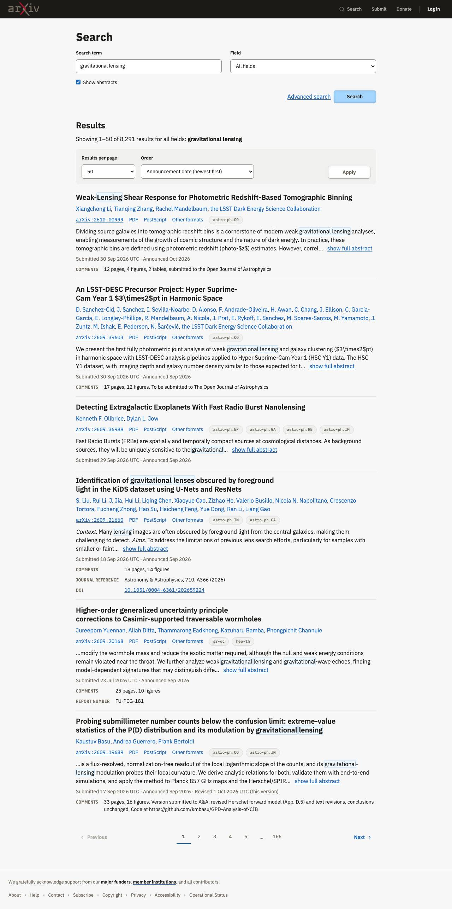
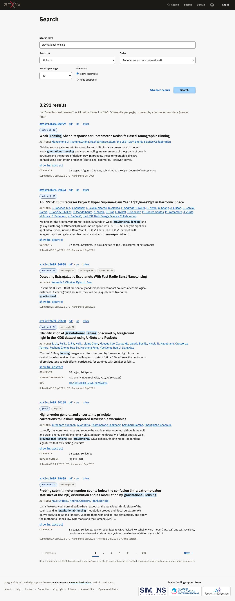
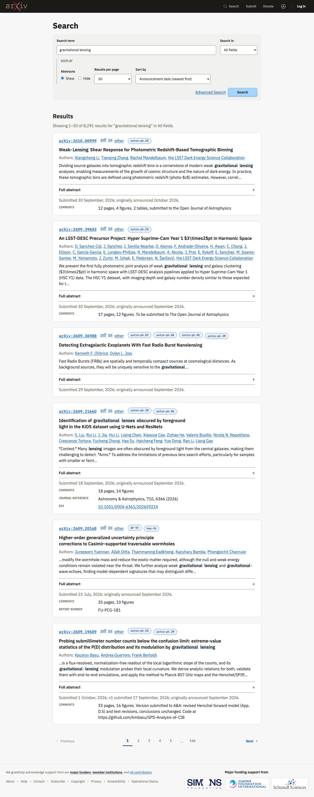
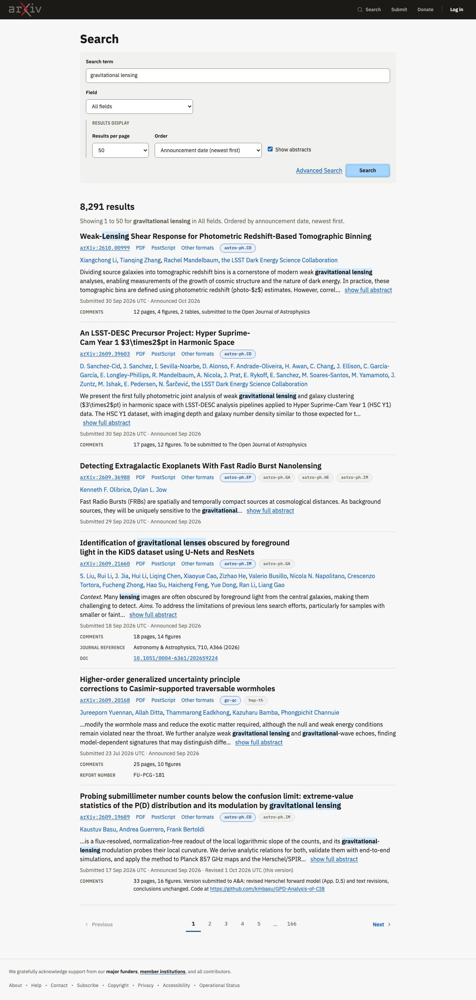

Simple search
2026-10-02 · design system at commit fa85b0b (with uncommitted changes to docs/) · the spec
Result
All four builds conform to the design system on the computed checks, and Shamsi rejected the design. The gap is not rule-following: the design system has no pattern for a compact search form, and nothing led the builders to put the form and results on a white primary band with the tips on the tint.
The review itself did not work. Shamsi did not realize there were four separate builds of three pages each, wrote detailed notes for Build A only, and the verdicts for B, C and D were entered without a separate look. Read her notes after seeing them together as her view of B, C and D: she preferred Build C.
Models: A and D are Opus 5.5, B and C are Sonnet 5.5. The Sonnet builds wrote more CSS of their own (37 and 27 rules against 15 and 21). The build Shamsi preferred is a Sonnet build, and it read the fewest files.
Builds
| Build A | Build B | Build C | Build D | |
|---|---|---|---|---|
| Model | claude-opus-5-5 | claude-sonnet-5-5 | claude-sonnet-5-5 | claude-opus-5-5 |
| Pages |  Results (phone, dark)No results (phone, dark) Invalid query (phone, dark) |  Results (phone, dark)No results (phone, dark) Invalid query (phone, dark) |  Results (phone, dark)No results (phone, dark) Invalid query (phone, dark) |  Results (phone, dark)No results (phone, dark) Invalid query (phone, dark) |
| Shamsi: verdict | Reject | Reject | Reject | Reject |
| Shamsi: what is off | Read1) On the page with results: - The page background is not white. What is our default in the DS? Is it white or tinted? I think it should be white, and the tint comes with the full width block that can be added. - Pagination is often expected both at the top and at the bottom of the paginated content, especially long content like here. Should that be a rule in the DS? - The dropdown arrows in our fields are too far to the right and too light. The DS should be updated with a thicker icon and more right side padding. - The search form seems too verbose, not minimal enough. It is just a search form and not complicated so could we have a variant of form without field labels? - Do we have an option in the DS for two fields being joined as a group? These two, for example, are so closely related they don't need to sit side by side as unique fields. The field dropdown is more like an extension of the search text field. Let me know if you understand what I am saying. - Similar to the above, simple search often puts the search/submit button on the same row as the field. Could we do that here? - The "field" dropdown does not need 50% width, while the search term field could use more width when it is available. - Show abstracts and Advanced search are both secondary options that could be grouped together. - There is too much space below the fields and the other content. It does not work for a very short form like this, especially with the show abstracts checkbox pushing other content down even further. 2) On the 'no results' page: - the search tips could be in the secondary content tinted color. That would go along with putting the search form and results on a white background as the primary content. This note applies to all of the pages/views. - The info alert looks correct. 3) on the invalid query page: - The blocking alert and message below the field looks correct - when there is a alert message below the field, it pushes the show abstracts checkbox down even further, and the search button down further also. The proximity is insufficient to show that they are grouped. 4) On the phone width page: - Can we fit both fields on one row even at narrow widths? What if each was about 50% width on narrow screens? This is assuming we join the two fields together. The button, on phones, could be on it's own line. - What is the best position for the "show abstracts" checkbox so it doesnt push the button down further? - what is the best position for "advanced search"? Should it be next to the button? Let me know if you need any screenshots. | ReadSee previous notes as they covered all of the screens. | ReadSee previous notes as they covered all of the screens. | ReadSee previous notes as they covered all of the screens. |
| Claude: technical verdict | Conformant, with issues | Conformant, with issues | Conformant, with issues | Conformant, with issues |
| Claude: technical notes | ReadSmallest stylesheet of its own: 15 rules. Search is a standard form; results per page and order sit in a filter bar with their own Apply button. Each result is an article with the title as a heading, separated by spacing. The results are not in a list, and the result count is not announced to assistive technology. Matched words use the accent tint with a thin border, and it added a high-contrast-mode fallback. The full abstract is in the page and a script swaps in the excerpt, so nothing is lost without JavaScript. It departed from the brief three times and said so: format links read PDF, PostScript, Other formats; dates follow the Versions pattern; show or hide abstracts is one checkbox. It added "UTC" to dates, which the sample data does not state. | ReadLargest stylesheet of its own: 37 rules. Two pages overflow sideways by 24px at 320px (no results, invalid query). It used a class that does not exist, .ds-alert--info. Everything, including order and results per page, is in one form; it did not use the filter bar. It read the digests in docs/spec/ and not the pattern pages. Results are an ordered list, the count is announced, and titles are headings. Matched words use the accent wash and bold. Category tags are buttons that open a tooltip. Search tips are in a card grid. It shows the 10,000 result notice as a standing hint under the page numbers, although this search is under the limit. | ReadNo JavaScript at all. The full abstract opens in an accordion under the excerpt, which works everywhere. Each result is a card. The whole search form is built as a filter bar, with a Display group for abstracts, results per page and order. Results are an ordered list and the count is announced. Matched words use the accent tint and bold. Dates keep the wording from the brief. It read the fewest files (AGENTS.md, DESIGN-POLICIES.md, using.html) and found the rest by searching. | ReadThe whole search form is built as a filter bar with a settings group. Results are an ordered list of articles separated by a hairline, with the title first. The result count is not announced on the results page. Matched words use the accent wash and bold. Show more hides the parts of the abstract before and after the excerpt; without JavaScript the full abstract shows. It reworded the two messages to follow STYLE.md and changed "query" to "search", and said so. It added "UTC" to dates. It noticed that an open abstract runs wider than the 65 character reading measure and reported it. |
| Cost | $3.19 · 8 min · 8 files read | $1.91 · 6 min · 12 files read | $1.73 · 6 min · 5 files read | $2.65 · 7 min · 6 files read |


Shamsi: notes after seeing them together
I was very confused during the review process. I did not realize I was reviewing 12 different screens. I thought I could fill in my notes just once after reviewing the differnt tabs (different error states + phone view).
I don't remember seeing any except Build A. See my previous notes to know what I thought of Build A.
Build B has too many options in the form that are given too much space and importance. We should determine the default order, then let users change it once results appear as part of the pagination/filter row.
I like Build C. Build C uses a tint to group all of the form elements together and clearly seperate them from the results. And the results use card-style blocks to clearly differentiate them from one another. However, it used an accordion to expand the abstract when the more appropriate affordance would be a 'show more' link. Also, the error display in Build C is incorrect because it put the alert below the form, not above it.
Build D has some of the positives of Build C, but also some of the negatives of Build B.
What the builds had in common
- All four: no accessibility rule failures in light mode, no contrast failures in dark mode, nothing loaded from another host, no existing file changed, no inline styles, no colour outside the design system, every control has a visible label.
- All four found and used numbered pages correctly, above and below the list, with the ends disabled.
- All four marked matched words with the existing accent tint plus weight. None invented a colour. This is ready to become a documented pattern.
- Three of four found that .ds-date-row is documented on the Versions page but has no styles in the stylesheet, and wrote their own.
- All four found that Show more does not fit an excerpt that starts in the middle of the abstract, and each solved it differently.
- Four different layouts for the search form. The design system does not say how a page's main form relates to the filter bar.
- Three of four separated results with spacing or a hairline; one put each result in a card.
- Two overrode the tooltip's position so it would not run off a narrow screen.
- Two widened a filter bar field because the longest option was cut off.
- Two did not announce the result count on the results page.
- The spec was at fault twice: 8,291 results is under the 10,000 limit, and no sample record has more than 25 authors, so neither case was ever shown.
- Predictions: right on finding the documented components, on no external resources, and on Sonnet writing more CSS. Wrong on matched words (no build invented a colour) and on JavaScript (every build works without it).
- No build used the page zones (white primary band, tinted secondary ground), although layout-patterns.html documents them.
What we changed in the design system
- None yet from this test's findings. Proposed changes are listed in whiteboard/planning/TESTING-PLAN.md under test 1.
- Made the same day, from the pagination discussion: numbered pages as one compact group, accent tint with accent border on the current page, and the row with the range and results per page.